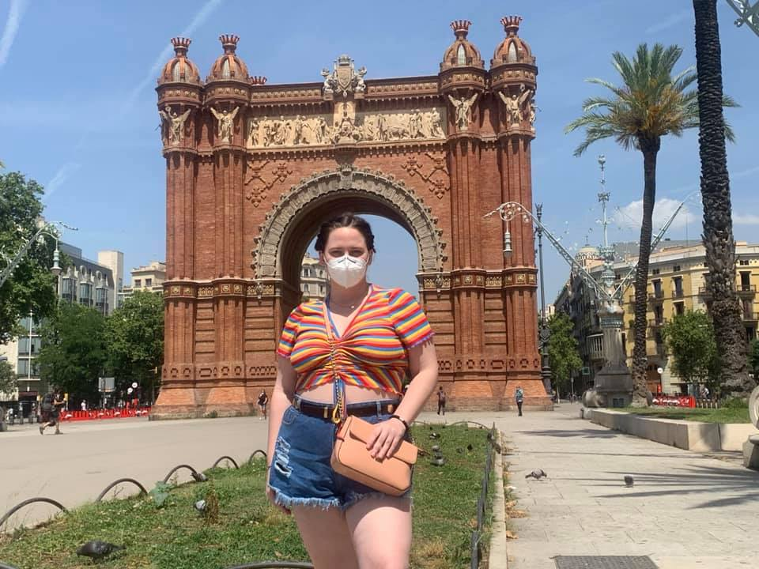
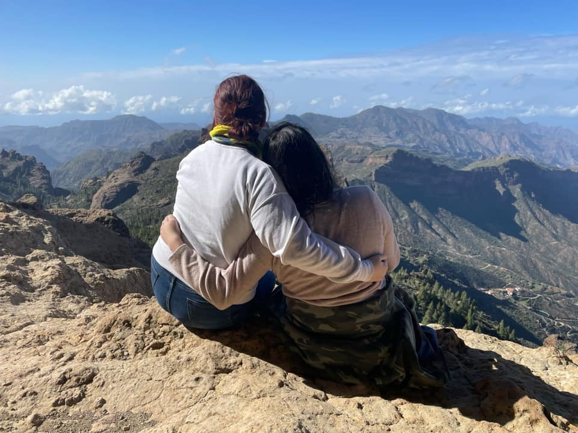
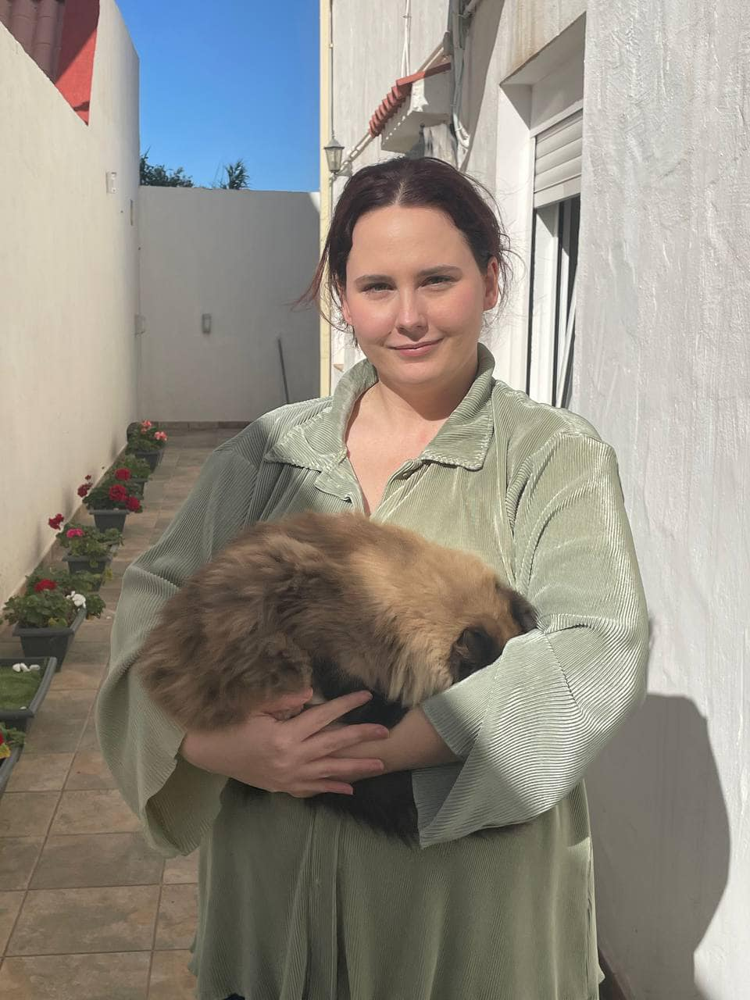
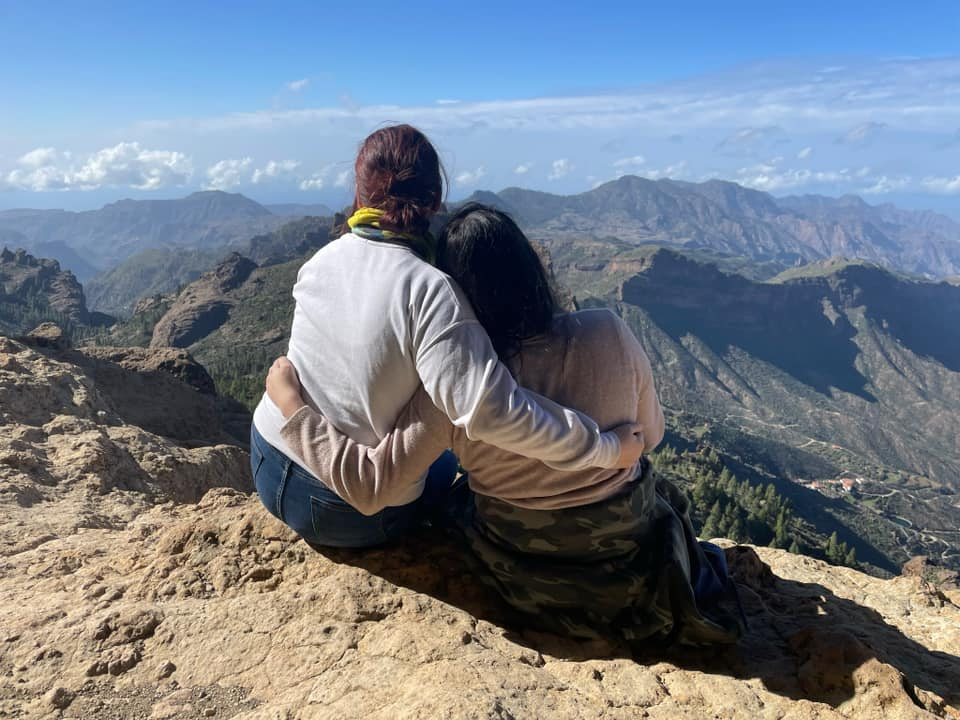
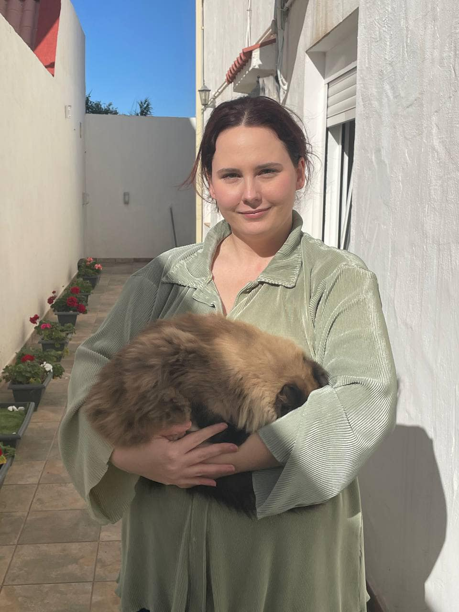

Barcelona, Spain
In 2021, I traveled to Barcelona, Spain. Barcelona is within the autonomous community of Catalonia. It was the first time the European borders were open to Americans since the 2020 Pandemic. At the El Prat airport, I was greeted by my girlfriend and her mom after a total time of over 30 hours due to the delays. My original arrival time was 10am, but I arrived around 11pm instead, and made the hour trip to Manresa, where I stayed for the next two weeks. While in Spain, I was introduced to a completely new culture, Spain was not my first trip overseas, however it was my first time on the European continent. Spanish people are lively, welcoming, and warm hearted people. They are eager to share their food, language, and customs with any visitors, and nothing makes them happier than when you try and immerse yourself into the culture through speaking their language or trying customary dishes.
Amsterdam, Netherlands
December 2022, I traveled to Amsterdam in the Netherlands with my girlfriend, Raquel. Raquel surprised me with the trip by booking all the accomodations and only giving small hints leading up to the depature day. Amsterdam is a historically rich country with beautiful water canals used for transportation, palaces (which I toured), and historical buildings such as Anne Frank's house and the (infamous) Red Light District. Dutch people are more resered, but I found that engaging with them in conversation was easy, and since the country has a high level of English, I was able to even make a few people laugh.


Canary Islands, Spain
Because of the flexibility within my job, I was able to spend a whole month abroad in December 2022. The last two weeks of my vacation were spent in the Canary Islands, a popular vacation spot for European tourists with views that are said to rival Hawaii. However, the Islands are a culturally dense destination, and their people have many traditions unique to the islands and island natives themselves. In the Canary Islands, I had the opportunity to travel both north and south. I spent time at the beach where is was 80F in December, as well as in the Mountains - where I hiked Roque Nublo and will never do again due to my fear of heights and slipping.
 


